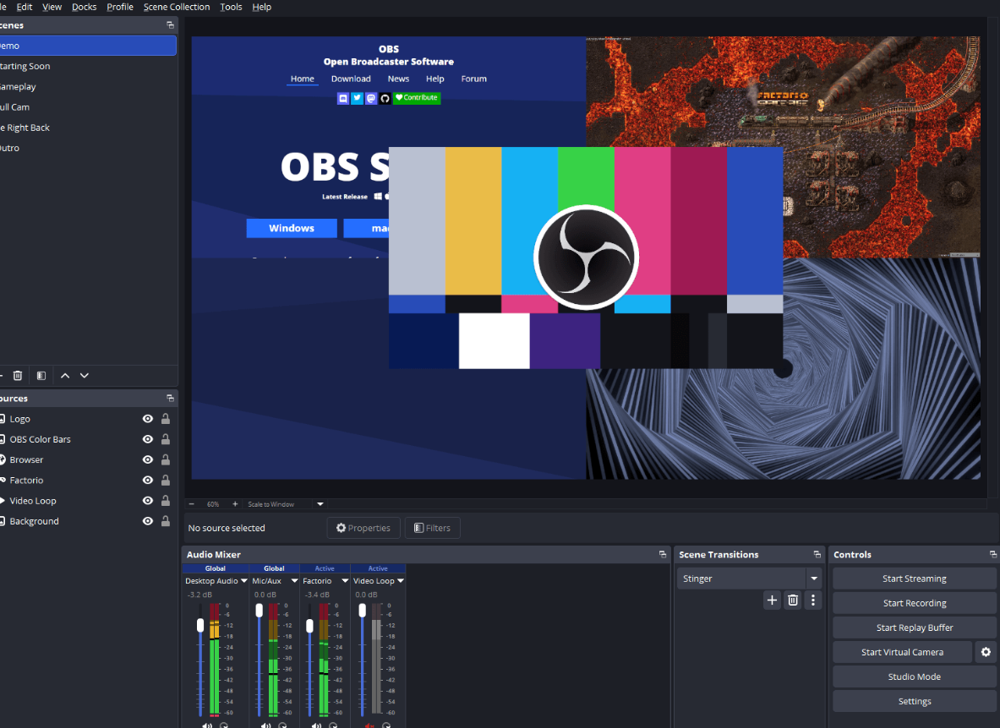

← トップページへ戻る
OBS Studio
OBS Studioは無料で利用できる録画・ライブ配信ソフトです。
YouTubeやTwitchでの配信はもちろん、パソコン画面の録画にも対応しています。
高機能ながら無料で利用できるため、多くの配信者や動画制作者に利用されています。
スクリーンショット

できること
- パソコン画面の録画
- YouTubeやTwitchでのライブ配信
- Webカメラ映像の表示
- マイク音声の録音
- 複数の画面レイアウト作成
おすすめな人
- ゲーム実況をしたい人
- ライブ配信をしたい人
- 画面録画をしたい人
- 動画制作を始めたい人
良い点
- 完全無料で利用できる
- 録画と配信の両方に対応している
- カスタマイズ性が高い
気になる点
- 初めて使う人には設定が少し難しい
- 高機能なため慣れるまで時間がかかる
ダウンロード先
公式サイトから無料でダウンロードできます。
公式サイトを開く
総評
★★★★★
録画や配信をしたい人にとって定番ともいえるソフトです。
最初は設定に戸惑うかもしれませんが、無料とは思えないほど高機能で、動画制作やライブ配信に幅広く活用できます。
更新日：2026-06-20
← トップページへ戻る